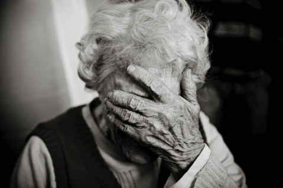
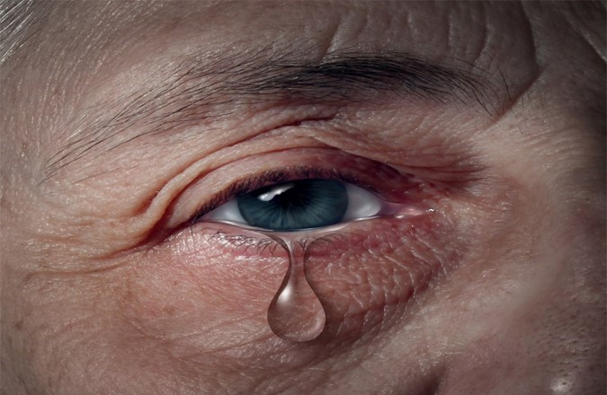

Depressão
 Objetivo geral
Divulgar orientações e esclarecimentos para a população em geral e à pessoa idosa sobre a prevenção da depressão nessa faixa etária.
Objetivos específicos
- Identificar idosos com sintomas ou quadros de depressão.
- Oferecer atendimento para tratar e previnir a depressão dessa comunidade, visando sempre seu bem estar e qualidade de vida.
- O aspecto mais importante nesse contexto é a observação, fique atento a possíveis alterações no humor ou no comportamento da pessoa idosa.
Fatores de risco
- Baixo apoio social e solidão;
- Diversas situações difíceis;
- Isolamento social;
- Dores e doenças físicas;
- Crise financeira;
- Luto;
- Consumo excessivo de álcool;
- Situações socioeconômicas;
- História familiar ou episódio passado de depressão.
Sintomas mais comuns:
- Delírios;
- Alucinações;
- Desorientação;
- Perda de memória;
- Apatia;
- Distração;
- Baixa concentração;
- Falta de energia;
- Insônia precoce;
Prevenção
Para atingir os objetivos do projeto, a turma tomou a iniciativa de elaborar um panfleto a ser entregue juntamente em parceria com Prefeitura Municipal Itajubá e Alunos do Senac em eventos realizados no parque da cidade e ou na praça Theodomiro Santiago em dias de grande movimento.
Divulgação através das redes sociais.Conclusão
- A principal dificuldade que se coloca os familiares e profissionais de saúde é identificar corretamente os sinais deste quadro clínico, que em muitos casos está associado ao fato da maioria dos idosos negar sua depressão e não procurar tratamento psiquiátrico.
- Com isso percebemos a necessidade de conhecimento do idoso assim como seus cuidadores e familiares sobre esse assunto para o tratamento e encaminhamento sejam eficazes.